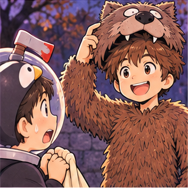
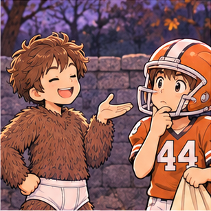
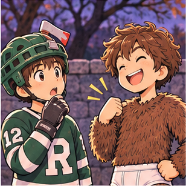
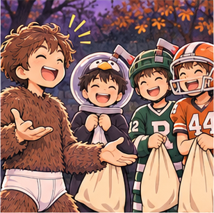
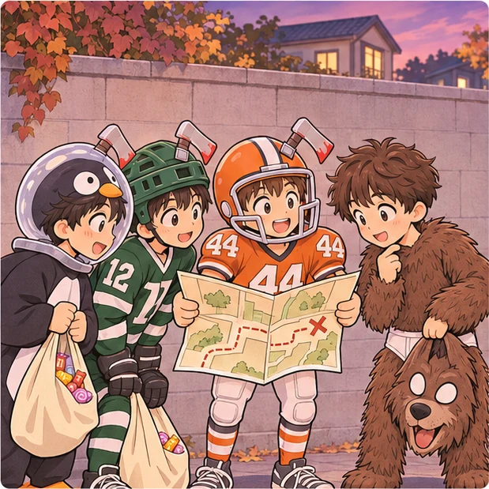
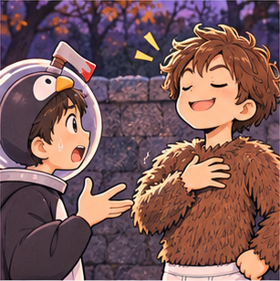
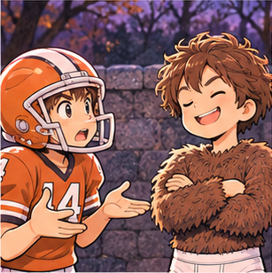
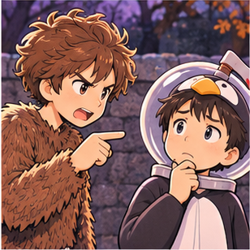
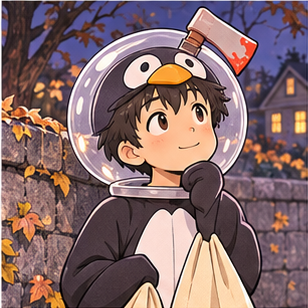
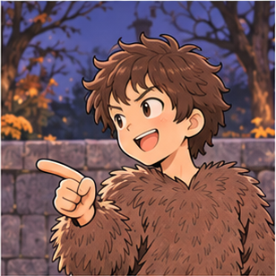

Chapter 7. The Halloween Monster! - Part 1 of 1
"Boo!" the yelled at us. He was waving his arms around in the air."Ahhhhhhhhh!" we screamed.

I think the three of us jumped about ten feet high."Take our candy!" Ryan yelled. "Take it all!

Just don't kill us!"It was a with thick brown hair all over its body. It even had a on its face.

The only thing the was wearing over all that hair was a pair of underwear. Tighty whities.I thought I was gonna die.

"Are you . . . the Halloween Monster?" I asked, ."No, dumbhead," the thing said as it took off its . "It's me!"

It was my friend Billy who lives !"Hey, that costume is cool!" I told Billy."What are you supposed to be?" Ryan asked.

"Take a guess," Billy said. "A vampire?" guessed Michael."Nope."

"A ?" guessed Ryan."Nope," said Billy. "I'm the !

Get it? A in his underwear is an !"Well, the only thing funnier than getting someone to say "underwear," or seeing someone in their underwear, is a kid dressed up as a in his underwear.

Billy is weird."Where are you guys heading?" he asked us. "I'm finished trick-or-treating."

"We're going to 176 Norman Road," Michael said, showing Billy the map. "Our school secretary lives there.""Oh, you don't want to go there," Billy us.

"That house is .""?" we all asked.A went down my .

I've been to houses in , but I've never been to a real house."Oh yeah," said Billy. "That lady is a witch.

She her husband, Marvin, and his head off. He came back as a , and he's been driving her ever since. She still keeps his head in a down in the ."

"How do you know all that?" I asked."I know everything," Billy . "I'm in the program at my school."

"Wait a minute," Michael said. "Why did she chop his head off if he was already ?""For the fun of it," Billy said.

"I told you she's a witch. I'm warning you, stay away from that house."It was hard for me to imagine Mrs. Patty poisoning her husband or chopping his head off.

Every time I get sent to the principal's office, she seems so nice. One time she even gave me a .I really wanted to see what kind of candy Mrs. Patty was giving out.

But if she my head off, I wouldn't be able to eat the candy anyway. I didn't know what to do."I don't believe you," Ryan told Billy.

"Mrs. Patty isn't a witch. And she's got more candy than anyone in town. That's what she told us."

"She just told you that so you'll come to her house," Billy said. "Go see for yourself. But don't say I didn't warn you.

When she poisons you and chops your heads off, don't come running to me."Billy left.

I put my hand over my neck. Maybe Halloween isn't my favorite holiday after all.